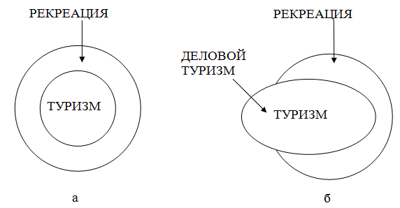

Модуль «Изменения в трактовке понятия «Рекреационная география» в 90-е гг.»
Рекреационная география, относящаяся к социально-экономическому блоку географической науки, сформировалась в период
развитого социализма с его устремлением к планированию и структурированию всех общественных и хозяйственных явлений.
Но в 90-е гг. произошли коренные изменения социального и экономического устройства России. Рухнула централизованная
плановая политика государства. Туристская деятельность, являвшаяся заботой партии, правительства, профсоюзов и
комсомола, о чем свидетельствуют их совместные постановления о развитии туризма, оказалась лишенной помощи
государства. Генеральная схема развития туризма в Советском Союзе, созданная в период господства плановой системы
хозяйства, стала не востребованной в новых социально-экономических условиях, так как не отвечала особенностям развития
туризма в стране, определяемым теперь коммерческими туристскими фирмами.
Рекреационная география, отражавшая планируемую рекреационную деятельность, успешно справлялась со своей задачей в
60 – 80 гг. по изучению и прогнозированию развития территориальных рекреационных систем в условиях социализма. Но
позже в процессах рекреации в стране, а, соответственно, и в рекреационной географии не могло не произойти глубоких
изменений, адекватных реалиям времени.
Когда в конце 60-х гг. для комплексной характеристики отдыха и туризма было использовано слово «рекреация», это
имело под собой основу. Выбрали термин, который стали использовать в это время и другие
специалисты. Под
рекреацией понималась совокупность явлений и отношений, возникающих в процессе
использования свободного времени для оздоровительной, познавательной,
спортивной и культурно-развлекательной деятельности людей на специализированных
территориях, находящихся вне населенного пункта, являющегося местом их
постоянного жительства (Мироненко, Твердохлебов, 1981).
В это же самое время под туризмом, представляющим собой один из основных блоков рекреационной деятельности в СССР,
понимали вид активного отдыха - «путешествия,
совершаемые с целью познания тех или иных районов, новых стран и сочетаемые в
ряде случаев с элементами спорта». Судя по энциклопедической статье, можно с уверенностью утверждать, что туризм
в 60-е гг. был частным случаем рекреации (рис. 15).

Рис. 15. Соотношение рекреации и туризма
а - в период 60 - 70-х гг.; б - в настоящее время
Но по прошествии двух десятилетий авторитетные специалисты в области рекреационной географии, авторы единственного
учебного пособия по ней, используемого в вузах всей страны, Н.С. Мироненко и И.Т. Твердохлебов определяют следующим
образом дефиницию «туризм»:
«В современной
научной литературе под туризмом принято понимать, совокупность отношений и
явлений, возникающих в процессе путешествия и пребывания людей вне своего
постоянного места жительства, если пребывание не превращается в продолжительное
проживание или во временное занятие ради заработка». Определение туризма, практически ничем не отличающееся от
определения рекреации, данной ей два десятилетия назад.
Сравним еще определения рекреации и туризма, процитированные выше, с понятием «туризм», используемым сегодня в
Федеральном законе «Об основах туристской деятельности в Российской Федерации»:
«туризм - временные выезды (путешествия) граждан Российской Федерации, иностранных граждан и лиц без гражданства с
постоянного места жительства в оздоровительных, познавательных, профессионально-деловых, спортивных, религиозных и
иных целях без занятия оплачиваемой деятельности в стране (месте) временного пребывания».
Через полтора - два десятка лет, судя по определениям, понятия «рекреация» и «туризм» начали сливаться,
эволюционируя в синонимы.
К аналогичному выводу приходит и профессор Л.Ю. Мажар, ведущая научные исследования в области рекреационной
географии: «Несмотря на многочисленные попытки определений дефиниций, строго развести понятия «рекреация» и «туризм»
так и не удалось. Всех устроил компромиссный «туристско-рекреационный» вариант» - утверждается ею.
В первом учебнике «География туризма», изданном в 2008 г. под редакцией А.Ю. Александровой, география туризма
определяется как отраслевая дисциплина социально-экономической (общественной) географии о пространственных
закономерностях и особенностях функционирования и развития территориальных систем организации (самоорганизации)
туристской деятельности людей. Но, если мы не видим принципиальной разницы между рекреацией и туризмом и начали
применять в научной литературе компромиссный термин - «туристско-рекреационное», то будет вполне корректно назвать
рекреационную географию, глубоко рассмотревшую за четыре десятилетия своего развития вопросы не только
территориальные, но и ряд других сторон отдыха и туризма, также и географией туризма. Можно признать, что «рекреация»
была термином, использованным до той поры, пока «туризм» в России не приобрел современного понимания, соответствующего
международной науки о туризме и туристской практики.
В настоящее время специалисты наравне с определением «туристский» пользуются терминами «рекреационный» и
«туристско-рекреационный». Нередко в одной статье авторы используют все три термина как синонимы. Чаще других
употребляется термин «туристский», что несомненно говорит о происходящей смене тематики, называемой рекреационной, на
родственную ей туристскую. Вероятно, настало время узаконить в качестве синонимов термины «туристский» и
«рекреационный», что уже и так имеет место «де факто».
Вызывает возражения употребление термина «туристско-рекреационный». Туристские поездки, путешествия – это часть
рекреации, и употреблять термин «туристско-рекреационный» то же самое, что говорить «туристско-туристский» или
«рекреационно-рекреационный», представляет собой терминологическую бессмыслицу.
Еще больше убеждает в том, что география туризма является эволюционным этапом рекреационной географии, анализ
суботраслей рекреационного хозяйства с позиций сегодняшнего туризма (табл. 6). Все виды суботраслей коррелируются с
видами туризма, которые включены в современные туристские классификации.
Таблица 6 Суботрасли рекреационного хозяйства и их современное классификационное название в туризме
| Суботрасли рекреационного хозяйства (70 – 80 гг. XX в.) | Соответствие современному классификационному названию видов туризма |
| Санатории и пансионаты с лечением | Лечебный туризм |
| Дома и пансионаты отдыха | Оздоровительный туризм |
| Туризм, включающий туристские учреждения и туристские маршруты, экскурсионные бюро, бюро экскурсий и путешествий, экскурсионные маршруты | Туристско-экскурсионная деятельность |
| Детские экскурсионно-туристские станции и туристские базы | Туристско-экскурсионная деятельность |
| Базы отдыха | Оздоровительный туризм |
| Базы и угодья хозяйств обществ охотников и рыболовов | Охотничий и рыболовный туризм |
| Альплагеря | Спорт |
| Пионерские лагеря | Оздоровительный туризм |
| Спортивные и спортивно-трудовые лагеря для подростков | Оздоровительный туризм |
| Дачи детских садов и ясельных учреждений | Оздоровительный туризм |
| Гостиницы и маршруты «Интуриста» | Туристская деятельность |
| Гостиницы и маршруты бюро молодежного туризма «Спутник» | Туристская деятельность |
| Гостиницы, мотели, кемпинги, палаточные лагеря отделов и управлений Советов народных депутатов | Оздоровительный туризм |
| Квартирные и квартирно-посреднические бюро | Оздоровительный туризм |
| Садоводческие товарищества; дачные кооперативы | Дачный туризм |
| Национальные парки | Оздоровительный и познавательный туризм |
Близость, а точнее слияние рекреационной географии и географии туризма обнаруживается также в процессе анализа
понятий «ресурс» и «туристский потенциал». По Н.С. Мироненко, И.Т. Твердохлебову, рекреационные ресурсы представляют
собой «компоненты географической среды и объекты антропогенной деятельности, которые благодаря таким свойствам, как
уникальность, историческая или художественная ценность, оригинальность, эстетическая привлекательность и
лечебно-оздоровительная значимость, могут быть использованы для организации различных видов и форм рекреационных
занятий».
Аналогичное определение дается туристским ресурсам в Федеральном законе «Об основах туристской деятельности в
Российской Федерации»: «Туристские ресурсы Российской Федерации - объекты духовной и материальной культуры, природного
наследия, иные объекты туристского показа, способные удовлетворить духовные и интеллектуальные потребности туристов,
содействовать восстановлению и развитию их физических сил, поддержанию нормальной жизни и деятельности».
Знакомясь с определением понятий «рекреационные ресурсы» и «туристские ресурсы», приходишь к убеждению, что они
совершенно идентичны. Это без сомнения говорит о чрезвычайной близости рекреационной географии и формирующейся
географии туризма.
Близок по имеющимся определениям и предмет исследования рекреационной географии и географии туризма. Для
рекреационной географии - это территориальная рекреационная система, включающая в себя природные и культурные
комплексы, технические системы, обслуживающий персонал, отдыхающих и орган управления.
По А.Ю. Александровой (2002) предметом исследования географии туризма является «территориальная организация
(самоорганизация) туристской деятельности людей». Но организация включает использование туристских (можно сказать и
рекреационных) ресурсов, технических систем, обслуживающего персонала, туристов и органов управления».
С.Р. Ердавлетов (2004) объектом исследования как рекреационной географии, так и географии туризма считает
рекреационную подсистему ойкумены (т.е. рекреационное пространство). Но возникает вопрос, почему рекреационную
подсистему? С таким же успехом можно сказать и туристскую. Туризм не является в настоящее время лишь частью рекреации,
он выходит за ее пределы, благодаря деловому туризму, который формирует 20 % объема всех международных туристских
прибытий.
Предметом исследования рекреационной географии по С.Р. Ердавлетову является территориальная организация
рекреационной деятельности населения, а географии туризма - территориальная организация туристской деятельности (либо
туризма, либо туристского движения). При этом каждая из названных научных дисциплин должна рассматривать
территориальную организацию деятельности своей отрасли сквозь призму ТРС. Но как уже было показано в настоящее время
термины рекреация и туризм все более сближаются и развести их не удается.
Следует напомнить о шаткости в структуре ТРС подсистемы «Орган управления». Ни на одной территории массового
отдыха в стране не существовало единого органа управления рекреационными учреждениями. Они находились в ведении
профсоюзов, БММТ «Спутник», «Интуриста», Министерства Вооруженных Сил, Центральной детской экскурсионно-туристской
станции, различных министерств и ведомств, крупных предприятий и высших учебных заведений, частных лиц. Все
рекреационные учреждения функционировали согласно распоряжениям своих ведомств. Территориальной рекреационной
системой, в классическом ее виде, могло выглядеть лишь отдельное рекреационное учреждение или группа учреждений
какого-либо ведомства, расположенных в одном рекреационном районе и использующих общий для всех рекреационный
потенциал.
Под системой же понимается «множество элементов, находящихся в отношениях и связях друг к другу и образующих
определенную целостность, единство». Никакого единства разрозненные предприятия ни в одном рекреационном районе страны
никогда собой не представляли.
Необходимо при рассмотрении соотношения рекреационной географии и географии туризма обратить внимание на то, что
обе географии изучают одну и ту же территорию, так как рекреационная и туристская деятельности проходят на одних и тех
же территориях.
Своего видения в отношении рекреационной географии придерживается профессор Д.В. Николаенко (2003). Он считает,
что почти до конца 80-х гг., до начала перестройки, рекреационная география могла определяться как
общественно-географическая дисциплина, занимающаяся изучением территориальных рекреационных систем. В конце 90-х гг.
давать такое определение было уже немыслимо, так как изменилась экономическая, социальная, политическая системы
страны, вместо централизованной государственной политики в области рекреации, ориентированной на продолжительную
перспективу (подтверждением тому являются постановления ЦК КПСС, Совета Министров СССР, ВЦСПС, ЦК ВЛКСМ о туризме)
преобладает ситуативная политика или ее отсутствие вообще.
«С конца 90-х гг. и на перспективу предметом исследования рекреационной географии стало изучение пространственных
закономерностей и особенностей поведения людей в процессе рекреационной деятельности и размещения рекреационных
объектов. В определении предмета исследования рекреационной географии важно отказаться от узкой ориентации на ТРС. Она
была приемлема в советский период» - считает Д.В. Николаенко.
Рассмотрим еще смену туристских терминов во времени, которыми определялась деятельность по организации отдыха,
лечения и экскурсионного дела в стране.
Предыстория этого вопроса уходит в 1696 г., когда Петр I отправил группу российских юношей в
поездку на учебу в Голландию, Англию и Венецию для того, чтобы они стали специалистами, которые могли бы
строить корабли, водить их в бою. По сегодняшним понятиям эту поездку вполне можно отнести к учебному туризму.
Следующим распространенным у обеспеченных людей России понятием стало поездка «на воды». Главным
направлением с начала XIX в. становятся Кавказские Минеральные Воды.
В XIX в. приобретает право гражданства в русском лексиконе термин экскурсоведение. Большое количество
школьников России под руководством учителей, Крымско-Кавказского горного клуба, других общественных объединений
экскурсировало по необъятным просторам России.
Термин «туризм» стал распространяться в России с начала XX в., когда было создано Российское общество
туристов, и особенно быстро это происходило с 1930 г. - времени возникновения Всесоюзного добровольного общества
пролетарского туризма и экскурсий. Благодаря лозунгам ОПТЭ, например, такому как «Чтобы строить СССР, надо его знать.
Чтобы лучше знать - будьте туристами», и деятельности многочисленных туристских ячеек, созданных на предприятиях и в
учебных учреждениях, термин «туризм» стал хорошо известен в стране.
Под руководством ОПТЭ создавались туристские базы, туристские маршруты, Народный Комиссариат здравоохранения СССР
и затем Министерство здравоохранения СССР строили санатории, профсоюзы - дома отдыха, БММТ «Спутник» - туристские
центры. Все это вместе в 60-е гг. было названо рекреационным хозяйством.
Рекреация, как устаревшее понятие, означало ранее перемену в школе, а также помещение для отдыха. В 60-е гг.
XX в. в нашей стране забытый термин «рекреация» был реанимирован, его стали употреблять, когда речь шла об отдыхе, о
восстановлении сил человека, израсходованных в процессе труда. В этом значении он применяется в научной литературе по
архитектурно-градостроительным, физиологическим, социально-экономическим и другим проблемам. Ученые Института
географии АН СССР также решили использовать термин «рекреация», объединив им проблемы отдыха, туризма, курортного
лечения и др., то, что относится к восстановлению физических и психических сил граждан.
Возможно, если бы туризм в начале 60-х гг. трактовался так, как он понимается в настоящее время, согласно
закону о туризме, то и не существовало бы в России «рекреационной географии», а развивалась бы «география туризма».
Можно согласиться с авторами, которые утверждают, что нынешняя география туризма вышла из тени рекреационной
географии. Специалисты по рекреационной географии в своих публикациях всегда большое место уделяли туризму, изучение
особенностей функционирования которого являлось главной, стержневой их темой. Н.С. Мироненко и И.Т. Твердохлебов в
аннотации к учебному пособию «Рекреационная география» называют его «научными основами миграционной рекреации»,
которую, без сомнения, можно идентифицировать с туризмом.
Контрольные вопросы к модулю «Изменения в трактовке понятия «Рекреационная география» в 90-е гг.».
1. Что подразумевалось в 60-е гг. под рекреацией и что означало понятие «туризм»?
2. Какие изменения произошли в трактовке дефиниции «туризм» в конце 80 гг.?
3. Как определяет географию туризма А.Ю. Александрова?
4. Что является предметом исследования рекреационной географии с 90-х гг. по Д.В. Николаенко?